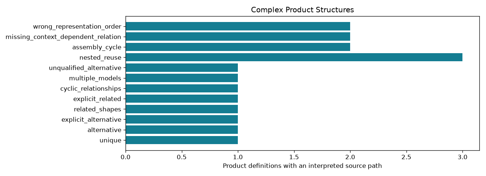

Offline, bounded research controls. A passing check may document a failure or an abstention.
| control_id | schema | status | product_count | representation_count | selected_count | assembly_path_count | diagnostic_count | checks_pass |
|---|---|---|---|---|---|---|---|---|
| unique | AP242_MANAGED_MODEL_BASED_3D_ENGINEERING_MIM_LF | resolved_subset | 1 | 1 | 1 | 0 | 0 | True |
| alternative | AP242_MANAGED_MODEL_BASED_3D_ENGINEERING_MIM_LF | partial | 1 | 2 | 0 | 0 | 0 | True |
| explicit_alternative | AP242_MANAGED_MODEL_BASED_3D_ENGINEERING_MIM_LF | resolved_subset | 1 | 2 | 1 | 0 | 0 | True |
| related_shapes | AP242_MANAGED_MODEL_BASED_3D_ENGINEERING_MIM_LF | partial | 1 | 2 | 0 | 0 | 0 | True |
| explicit_related | AP242_MANAGED_MODEL_BASED_3D_ENGINEERING_MIM_LF | resolved_subset | 1 | 2 | 1 | 0 | 0 | True |
| cyclic_relationships | AP242_MANAGED_MODEL_BASED_3D_ENGINEERING_MIM_LF | partial | 1 | 3 | 0 | 0 | 0 | True |
| multiple_models | AP242_MANAGED_MODEL_BASED_3D_ENGINEERING_MIM_LF | resolved_subset | 1 | 1 | 1 | 0 | 0 | True |
| unqualified_alternative | AP242_MANAGED_MODEL_BASED_3D_ENGINEERING_MIM_LF | partial | 1 | 1 | 0 | 0 | 1 | True |
| nested_reuse | AP242_MANAGED_MODEL_BASED_3D_ENGINEERING_MIM_LF | resolved_subset | 3 | 3 | 3 | 4 | 0 | True |
| assembly_cycle | AP242_MANAGED_MODEL_BASED_3D_ENGINEERING_MIM_LF | partial | 2 | 2 | 2 | 0 | 0 | True |
| missing_context_dependent_relation | AP242_MANAGED_MODEL_BASED_3D_ENGINEERING_MIM_LF | partial | 2 | 2 | 2 | 0 | 0 | True |
| wrong_representation_order | AP242_MANAGED_MODEL_BASED_3D_ENGINEERING_MIM_LF | partial | 2 | 2 | 2 | 0 | 0 | True |
Detailed evidence · CSV · Contract
